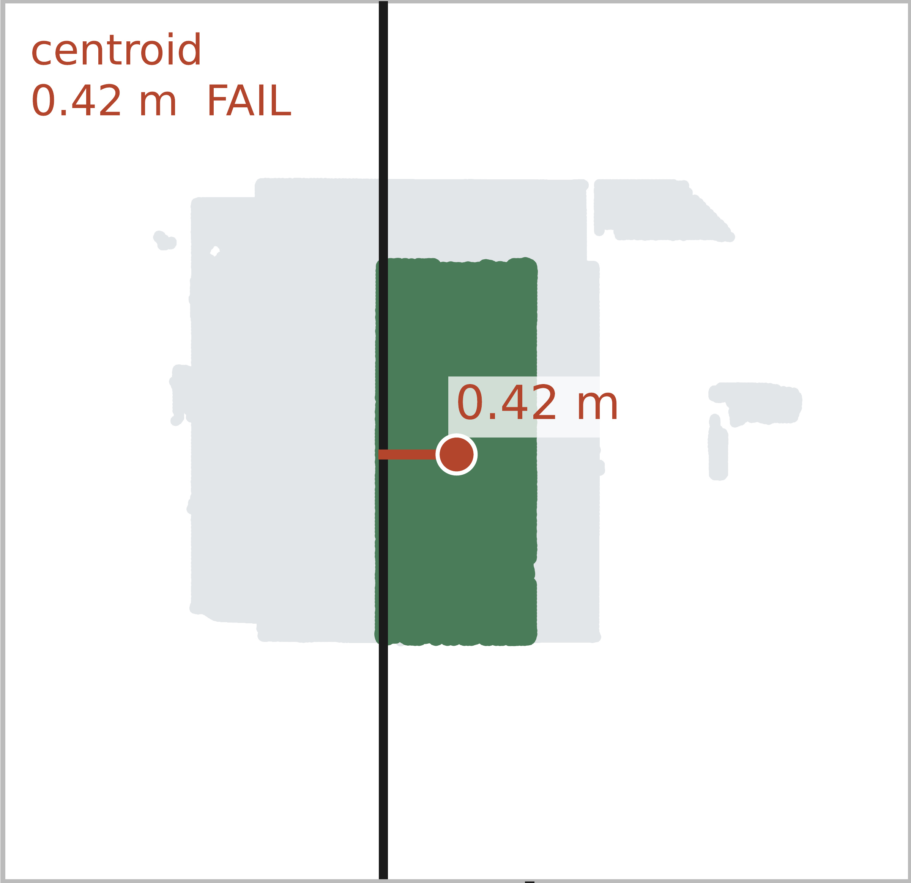
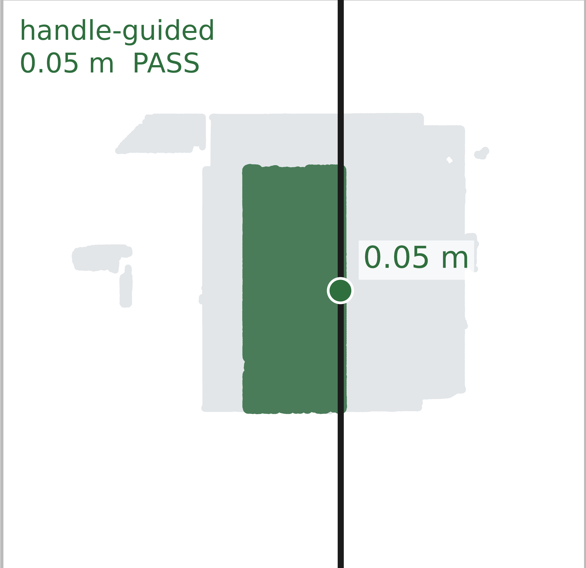

Part predictor
Groups broad surfaces and predicts rotation or translation. These are the final part instances, augmented with geometric motion.
First in both evaluated outputs · View results
A door and its handle tell a shared story. We use their physical relationship to understand what moves, how it moves, and where to interact.
1 National University of Singapore2 The Hong Kong Polytechnic University
Corresponding author: Xingyi Yang

Handle-guided hinge placement
Complementary handle proposals
Part-only motion-class correction
Articulate3D validation · percentage-point changes in motion AP or handle AP, as labelled. Different mechanisms, not additive gains.
The task
A static 3D scan should tell us how a scene can be interacted with—not only what objects it contains.
Locate individual movable parts, such as doors and drawers.
Infer rotation or translation, its axis, and the hinge location for a rotating part.
Find the small operating regions we call handles, and associate their motion class.
The difficulty: broad surfaces and tiny handles need different prediction support. A closed door also hides its hinge side; a handle alone does not reveal whether its part rotates or slides.
How it works
Three independent predictors see the same RGB point cloud. A fixed geometric decoder and a contextual label rule connect their outputs.

Groups broad surfaces and predicts rotation or translation. These are the final part instances, augmented with geometric motion.
Labels individual points and groups them into small handle instances. Their locations guide hinges; their detections stay in the final output.
Uses its own parent query features to propose associated handles. Its parts remain internal; only the additional handles enter the final output.
A physical clue. No motion-regression training.
A door handle is usually away from its hinge. We fit a box to the reliable part surface, construct candidate hinge lines, and let a nearby handle select the opposite side. Rotational axes use an upright prior; translating parts use the fitted surface’s thin direction. These explicit assumptions also define the decoder’s limits.
Validation
Controlled comparisons on 42 public validation scenes. All three perception models are trained on the 195 training scenes.
Only the origin rule changes. Masks, classes, confidence scores and axes stay fixed.
Add part-associated candidates, then use context to refine only the added handles’ classes.
Reading the results. Motion AP requires a correct mask, axis and rotational origin; handle AP evaluates instance masks and motion classes. Scores are percentages. Gains use unrounded scores, so rounded endpoints may not subtract exactly.
Part-only and full-context labels are alternative corrections of the same union. Full context includes dense-label fallback and adds 1.34 pp, not 0.98 + 1.34 pp. Proposal gains show complementarity, not an isolated causal effect of parent conditioning.
Appending children improves handle AP by 3.94–5.01 pp across three child-training draws. The reference proposal gain has a paired 95% scene interval of [+1.47, +8.56] pp.
Full contextual correction is positive in all three draws but varies from 0.19 to 1.34 pp. Scene intervals use fixed predictions and do not measure retraining variability. Validation also informed model selection; these are development-set comparisons.
Read the controls in the paperSee the difference
Compare hinge placement, handle recovery and motion-class correction on selected validation examples. The last tab shows the method’s limits. Light gray points are scene context; each plot includes a legend.
Switch between Centroid and Handle-guided to compare two origin estimates for the same predicted movable part. This isolates how the handle cue changes hinge placement while the part mask stays fixed.


The baseline puts the origin at the part’s center. Our geometric decoder uses a predicted handle to choose the opposite attachment side. The plot shows the resulting origin estimate; the handle itself is not drawn.
How to read the plot
Origin error in this example. Red/green and FAIL/PASS indicate whether the error is below 0.25 m; they do not evaluate the full detection.
The part mask and specimen are fixed, but the source renderer uses separate projection directions: compare the origin and error, not pixel alignment. This is the median centroid-error example among cases improved by handle guidance.
The two examples illustrate different benefits: an extra part-associated proposal recovers a handle location, while a containing part’s motion class corrects the meaning of an already predicted handle. They are separate examples, not a before/after pair.
The joint part-handle predictor adds a candidate that overlaps the annotation at IoU > 0.5. The dense source alone has no matching mask here. This illustrates why combining the two proposal sources increases coverage.
The part’s rotation class changes this handle’s label from translation to rotation. The black handle points and their confidence stay unchanged: this is a semantic correction, not a better mask.
The two panels use different legends: black is the annotation in the recovery example, but the prediction in the context example. These selected localization and relabeling cases are not per-example AP measurements.
Handle guidance still depends on the motion decoder’s geometric assumptions. Part-based label correction changes a handle’s class, not its shape. These examples separate those two limits.
This nonvertical hinge falls outside the decoder’s upright-axis assumption. The handle-guided origin still has 0.85 m error. A useful handle cue cannot correct the wrong axis model.
The predicted handle covers too much of the surrounding surface. Relabeling cannot remove those extra points, and our contextual correction leaves dense detections untouched.
The model assumes approximately planar supports and upright rotational axes. The report includes the full failure census and additional paired examples.
These are selected validation examples explaining behavior, not estimates of how frequently each outcome occurs. Aggregate performance is reported in the quantitative results above.
Research resources
The paper, code, and model checkpoints.
If this work is useful to your research, please cite our arXiv preprint.
@article{kong2026segmentsnap,
title = {Geometric and Semantic Coupling for
Interaction Understanding in 3D Scenes},
author = {Kong, Hanyang and Yang, Xingyi},
journal = {arXiv preprint arXiv:2609.25247},
year = {2026},
url = {https://arxiv.org/abs/2609.25247}
}{kind=link}
{kind=link}
{kind=link}
{kind=link}
{kind=link}
{kind=link}